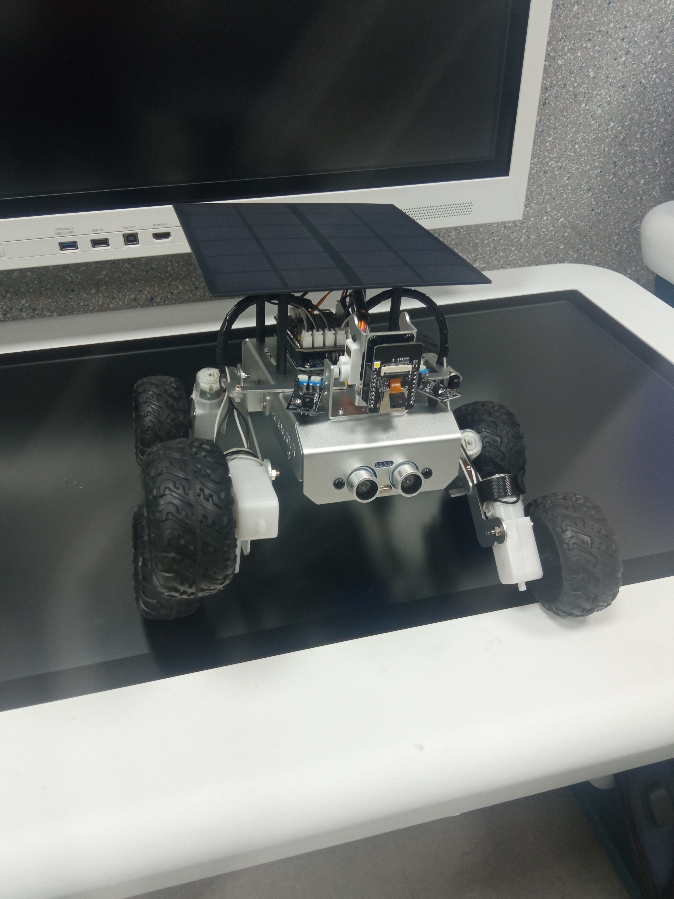
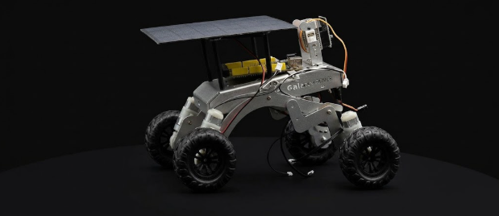
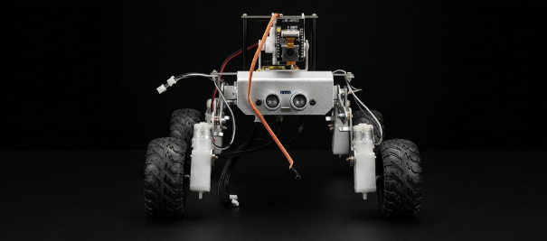
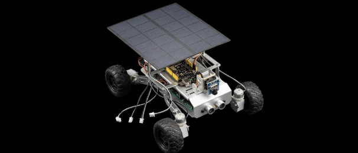
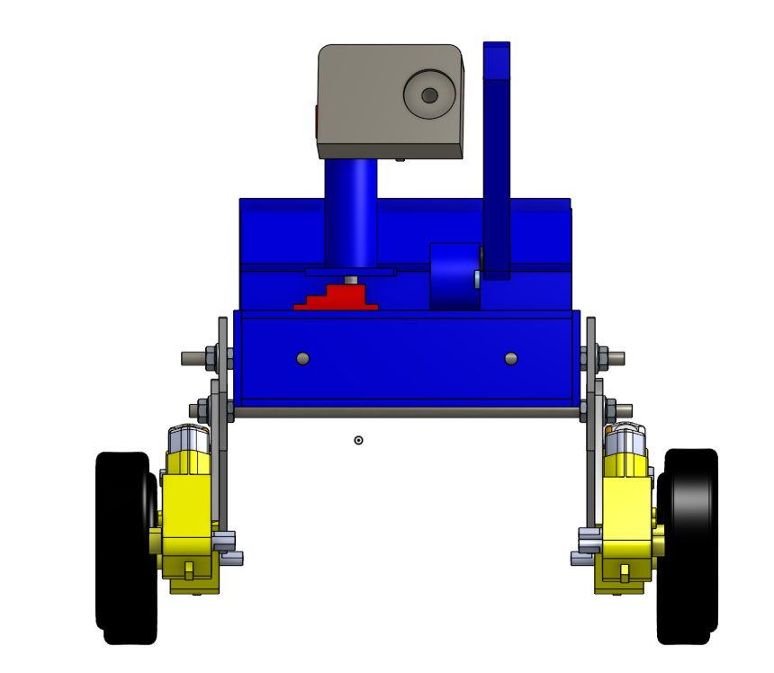
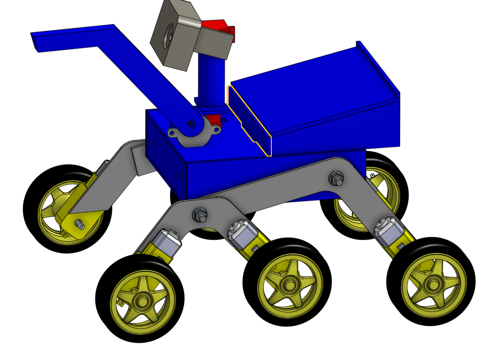
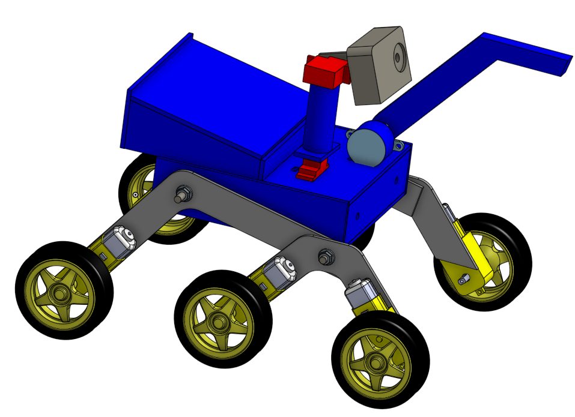

Una plataforma de rescate compacta y refinada, concebida para adentrarse donde otros no pueden llegar. Con visión térmica, detección ambiental y mapeo inteligente, cada componente ha sido elegido para servir a un propósito: encontrar vida en medio del caos.
Descubrir funciones
Tras un sismo o inundación, los equipos de rescate enfrentan entornos colapsados, inestables y peligrosos. La "hora de oro" —los primeros 60 minutos— es crucial para encontrar sobrevivientes, pero el acceso a espacios estrechos o zonas con riesgo de derrumbe es limitado para los humanos. Los rescatistas necesitan herramientas que les permitan inspeccionar, mapear y detectar signos de vida sin exponerse innecesariamente. El KVMP-3 nace para responder a esa necesidad: un robot compacto capaz de adentrarse en la zona de desastre, transmitir imágenes en tiempo real, detectar condiciones ambientales adversas y ayudar a trazar un mapa del área, todo con el objetivo de salvar vidas.
Cada capacidad ha sido pensada para asistir al rescatista con precisión y claridad. La cámara ocupa el lugar central; los sensores complementan su labor.
Transmisión de imágenes desde la cámara ESP32-CAM MB.
Desplazamiento autónomo por entornos desconocidos.
Control remoto mediante módulo Bluetooth HC-05.
Sensor ultrasónico HC-SR04 para evitar colisiones.
Trazado del recorrido y registro del entorno.
Sensor DHT11 para condiciones ambientales.
Sensor MQ-2 para monóxido y otros gases.
La ESP32-CAM MB no es un componente más: es el sentido principal del robot. A través de ella, el rescatista observa lo que el ojo humano no alcanza, guiando cada movimiento y cada decisión. Los sensores ambientales amplían la percepción, pero es la imagen la que cuenta la historia.
Selección cuidadosa de cada pieza, priorizando la fiabilidad y la integración armoniosa.
Vistas estructurales de la plataforma KVMP-3.






El Colegio Kavac posee una trayectoria consolidada en competencias de robótica, habiendo alcanzado el segundo lugar en la edición anterior del torneo. Lejos de conformarnos, decidimos trascender nuestro modelo previo y dar vida a una nueva generación: el KVMP-3. Cada línea de código, cada componente y cada decisión de diseño responde a una búsqueda constante de excelencia y propósito.
Las mentes detrás del KVMP-3.
Responsable del desarrollo web del proyecto, diseñando y programando el sitio que presenta el KVMP-3 al público. Además, junto a Samantha, lideró la fase de planteamiento del problema, identificando la necesidad que el robot busca resolver, y participó activamente en la definición del modelo de negocio, aportando una visión estratégica para que el proyecto fuera viable y sostenible.
Líder del equipo, Mahmoud se encargó de coordinar las distintas áreas del proyecto, asegurando que cada integrante cumpliera con sus tareas y que los plazos se respetaran. Su principal aporte técnico fue el desarrollo del código en Arduino que controla el robot, programando la lógica de movimiento y los sensores que permiten al KVMP-3 funcionar de manera autónoma.
Lideró las áreas de marketing y modelo de negocio, desarrollando la estrategia de comunicación del proyecto y definiendo cómo el KVMP-3 podría generar valor. Además, trabajó junto a Abdalla en el planteamiento del problema, investigando y estructurando la necesidad que el robot aborda, lo que permitió orientar el diseño y los objetivos del equipo.
Se encargó, junto con Ramzi, de toda el área mecánica del robot. Su trabajo incluyó el diseño de la estructura, la selección de materiales y la construcción física del KVMP-3, asegurando que el chasis fuera resistente, funcional y adecuado para las tareas que el robot debía realizar.
Colaboró estrechamente con Pavel en el desarrollo mecánico del robot, participando en el diseño y la construcción de su estructura. Su trabajo se centró en el ensamblaje y los ajustes necesarios para que el KVMP-3 funcionara correctamente, garantizando la estabilidad y el rendimiento del sistema mecánico.